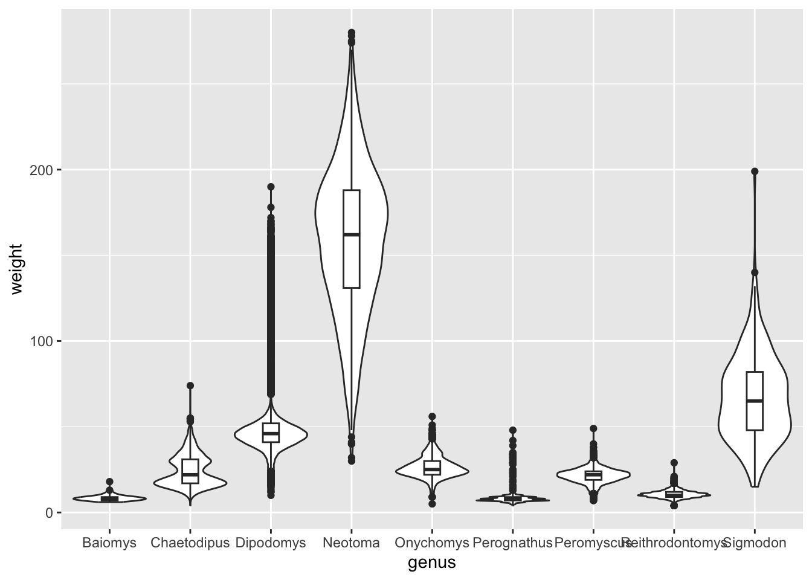
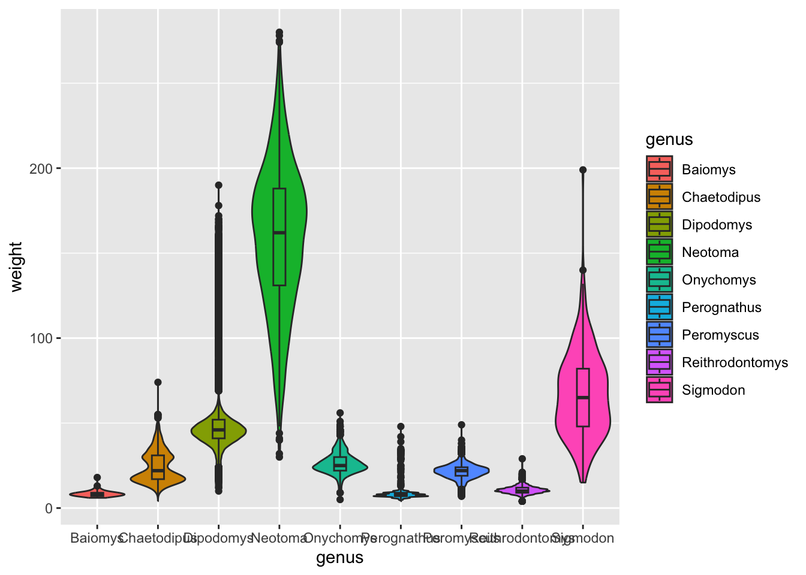
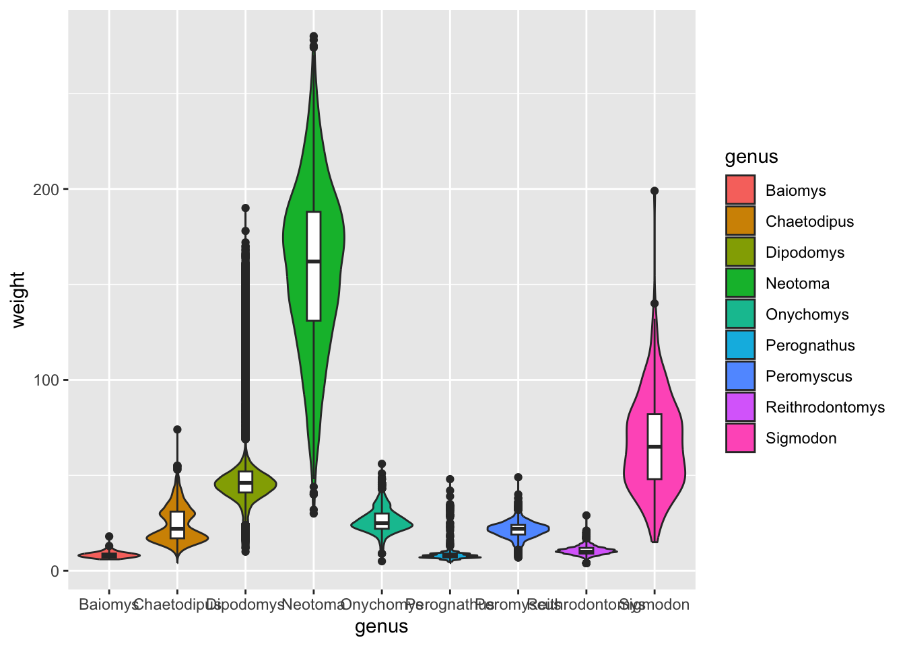

Data visualisation with tidyverse

Visualising is probably one of the most satisfying parts of doing
data analysis. After all, who doesn’t like a nice plot? We have already
seen the basic syntax to create a ggplot():
ggplot(data = <DATA>, mapping = aes(<MAPPINGS>)) + <GEOM_FUNCTION>()and with it, you can create plots such as this:

Make sure you loaded the surveys data:
#> Rows: 34786 Columns: 13
#> ── Column specification ──────────────────
#> Delimiter: ","
#> chr (6): species_id, sex, genus, species, taxa, plot_type
#> dbl (7): record_id, month, day, year, plot_id, hindfoot_length, weight
#>
#> ℹ Use `spec()` to retrieve the full column specification for this data.
#> ℹ Specify the column types or set `show_col_types = FALSE` to quiet this message.For this lesson we’re going to remove missing values from our table. This is not always desirable (you might be throwing away good data!), but it will help us make this lesson clearer.
We will use the function drop_na(), which removes rows
with any missing data:
Customising Geometries
Plots creating with ggplot() are extremely versatile -
you can change any component of the plot, whether it is the data points,
the axes, the titles, the ticks on the axes etc. Some of these custom
options you will want to use often, whilst others are perhaps less
relevant. There are too many options to cover all of them, but we will
go through some of the most useful ones.
Geometries themselves can be changed in several ways, for example their transparency, colour, size, shape, etc.
To know which aesthetic components can be changed in a
particular geometry, look at its documentation
(e.g. ?geom_point) and look under the “Aesthetics” section
of the help page. For example, the documentation for
?geom_point says:
geom_point() understands the following aesthetics (required aesthetics are in bold): - x - y - alpha - colour - fill - group - shape - size - stroke
You can also find a list of aesthetics for each type of plot in the ggplot2 cheat sheet.
For example, we can use the alpha aesthetic to change
the transparency of the points. This is very useful when your data
points are really close together, or even overlapping. The
alpha argument takes values from 0 (100% transparency) to 1
(0% transparency):
ggplot(data = surveys_complete,
mapping = aes(x = weight, y = hindfoot_length)) +
geom_point(alpha = 0.2)
Try changing the size, shape and colour of the points in our plot (hint: web search “ggplot2 point shapes” to see how to make a triangle).

Changing aesthetics based on data
Another way of modifying geometries is based on a
variable. For example, if we were interested to see which data
points belong to each plot type - to see if there is any pattern in the
data - then we could give each plot type its own colour. The way to
specify this is in the aes() helper function, where we give
the colour argument the relevant variable (i.e. the name of
the column in our data set that contains this variable).
ggplot(data = surveys_complete,
mapping = aes(x = weight, y = hindfoot_length, colour = plot_type)) +
geom_point()
Aesthetics: within aes() or not?
It might be a bit confusing where the
colour/size/alpha/etc. arguments
need to go. For example, when we were colouring all the data points blue
in the previous exercise, it went in the geom_point() and
not within an aes(), whereas when we were colouring based
on plot_type it had to go inside the aes(). An
easy way to remember what to use is: if we want the aesthetic to
change based on the data, then it goes inside aes(),
otherwise it does not.
geom_boxplot() geometry, make a boxplot that
shows the distribution of weight (y-axis) for each genus (x-axis).
Colour the inside of the boxplots by sex.
Hint
To colour the inside of a geometry you can use thefill
aesthetic. To learn about the aesthetics that can be used with each
geometry, look at the help page of the geom_*() function in
the section entitled “Aesthetics”.
Same data different plots
If we would like to try other type of plots on the data, one option is to save the ggplot into a variable as below:
# Assign plot to a variable
surveys_complete_plot <- ggplot(data = surveys_complete,
mapping = aes(x = weight, y = hindfoot_length))
# Draw a scatter plot
surveys_complete_plot +
geom_point()As you can see, when we assigned the plot to
surveys_complete_plot we did not specify a
geom_function. That is because if we store the plot
backbone into a variable, we can then easily add the
geom_function we are interested in, without having to type
all the initial plot data again.
Now let’s use a geom_smooth() instead of
geom_point(). This geometry is good when you need to see if
there is any pattern between the two variables being plotted that you
would not normally see in a scatter plot due to over plotting.

Rather than seeing each geometry separately, sometimes plotting multiple geometries on top of each other is a better way. You can add multiple plots as layers on top of each other as follows:

Argument inheritance in plots
- Anything you put in the
ggplot()function can be seen by any geom layers that you add (i.e., these are universal plot settings). - You can also specify mappings for a given geom independently of the
mappings defined globally in the
ggplot()function. - The
+sign used to add new layers must be placed at the end of the line containing the previous layer. If, instead, the+sign is added at the beginning of the line containing the new layer, >ggplot2will not add the new layer and will return an error message.
Make a boxplot of genus (x-axis) by
hindfoot_length (y-axis). Add a new geometry layer
behind the boxplot using geom_violin().
Bonus: either by doing a web-search or by looking at the help page of
geom_boxplot() and geom_violin(), see if you
can find how you can re-scale the violins so that they all have the same
width and on the other hand make the width of the boxplots narrower.
Answer
The basic plot is:
However, the boxplots offuscate the violin plots. Looking at the help
for geom_boxplot() and geom_violin(), we can
see there are some options to change this behaviour.
ggplot(surveys_complete, aes(genus, weight)) +
geom_violin(scale = "width") +
geom_boxplot(width = 0.2)
Controlling aesthetics in individual geometries
Let’s say that, in the plot from our previous exercise, we wanted to colour the violins by genus, but keep the boxplots without colour.
As we’ve learned, because we want to colour our geometries based on data, this goes inside the aes() part of the graph:
ggplot(surveys_complete, aes(x = genus, y = weight, fill = genus)) +
geom_violin(scale = "width") +
geom_boxplot(width = 0.2)
OK, this is not what we wanted. Both geometries (boxplots and violins) got coloured.
It turns out that we can control aesthetics individually in each geometry using the aes() function. Like this:
ggplot(surveys_complete, aes(x = genus, y = weight)) +
geom_violin(aes(fill = genus), scale = "width") +
geom_boxplot(width = 0.2)

Facets
We have seen that we can highlight parts of our data by using colour.
For example, we used colour = plot_type to colour our data
based by plot type to see if there are any trends in the data.
Another way of highlighting parts of the data is by splitting the
data into separate panels, based on a variable within your data. This is
called faceting and it is a very powerful tool in
ggplot to better understand your data.
There are two types of facet functions:
facet_wrap()arranges a one-dimensional sequence of panels to fit on one page.facet_grid()allows you to form a matrix of rows and columns of panels. Both geometries allow to to specify faceting variables specified withvars().
In general:
facet_wrap(facets = vars(facet_variable))facet_grid(rows = vars(row_variable), cols = vars(col_variable)).
Using facet_wrap()
If we wanted to visualise the scatter plot we created above, but
split by plot_type we would have to use
facet_wrap(), since we are splitting the data by one
variable (plot_type):
ggplot(surveys_complete,
aes(x = weight, y = hindfoot_length)) +
geom_point() +
facet_wrap(facets = vars(plot_type))
Using facet_grid
What if we wanted to split the data by plot_type, but
also further divide the data by sex to see if there are any
clear differences between male and female observations? In that case we
would have to split the data based on two variables, which
means we have to use facet_grid():
ggplot(surveys_complete,
aes(x = weight, y = hindfoot_length)) +
geom_point() +
facet_grid(rows = vars(sex), cols = vars(plot_type))
Finally, with facet_grid(), you can organise the panels
just by rows or just by columns. Try running this code yourself:
# One column, facet by rows
ggplot(surveys_complete,
aes(x = weight, y = hindfoot_length)) +
geom_point() +
facet_grid(rows = vars(sex))
# One row, facet by column
ggplot(surveys_complete,
aes(x = weight, y = hindfoot_length)) +
geom_point() +
facet_grid(cols = vars(sex))Improving Visualisation
There are many ways to improve how we visualise our data. We will
cover two particular techniques here, which are very useful but require
combining ggplot2 with some of the dplyr data
manipulation functions we briefly covered in the previous Starting with Data section.
The two techniques are:
- highlighting particular data in our plot, what is informally called a “popout”
- re-ordering categorical variables to better convey differences between them
Popout
Let’s take our previous scatterplot of weight vs hindfoot length:

Let’s say we wanted to highlight the samples that were collected
after 2000. We know how to colour points based on a variable
(column) in our data, by adding that variable name to our
aes(). So, what we need to do is create a new
column, which contains information about whether a particular
observation was collected after 2000.
Let’s see this in practice:
# take our table, and then...
surveys_complete %>%
# add a new column which contains TRUE/FALSE for our condition, and then...
mutate(after_2000 = year > 2000) %>%
# select a few columns only (for ease of seeing the contents in the new column)
select(genus, weight, hindfoot_length, year, after_2000)In the code block above, we used the mutate() function
to add a new column to our table, which contains the result of
evaluating a logical condition of whether year > 2000.
The result is a logical vector containing TRUE/FALSE values,
matching whether the observation was collected before or after 2000.
By using pipes %>% we can continue by
passing this table with the added column to our ggplot, and colour the
points by this new column:
# take our table, and then...
surveys_complete %>%
# add a new column which contains TRUE/FALSE for our condition, and then...
mutate(after_2000 = year > 2000) %>%
# make the plot
ggplot(aes(x = weight, y = hindfoot_length, colour = after_2000)) +
geom_point()
This is still not perfect (we may want to change colours and adjust the order in which the points are plotted), but at least we now have two colours distinguishing the samples collected before and after 2000.
To further improve this visualisation, we can sort the rows of our
table by the newly created column, because ggplot places points in the
order they appear on the table. We can use the arrange()
function to achieve this, and include it in our block of code:
# take our table, and then...
surveys_complete %>%
# add a new column which contains TRUE/FALSE for our condition, and then...
mutate(after_2000 = year > 2000) %>%
# arrange the table by new column
arrange(after_2000) %>%
# make the plot
ggplot(aes(x = weight, y = hindfoot_length, colour = after_2000)) +
geom_point()
This is better, now we have all the points that were collected after 2000 plotted on top of the ones that were collected before that year.
Finally, to achieve the “popout” effect, we may want to play around
with the colours, so that the points that are “FALSE” appear in a more
neutral colour such as black, whereas the ones that are “TRUE” appear in
a more vivid colour. We will talk more about colour customisation in the
following section, but for now we can demonstrate how to use the
scale_colour_manual() function to adjust the colours of our
categories manually:
# take our table, and then...
surveys_complete %>%
# add a new column which contains TRUE/FALSE for our condition, and then...
mutate(after_2000 = year > 2000) %>%
# arrange the table by new column
arrange(after_2000) %>%
# make the plot
ggplot(aes(x = weight, y = hindfoot_length, colour = after_2000)) +
geom_point() +
scale_colour_manual(values = c("FALSE" = "black", "TRUE" = "orange"))
This is now a more striking visualisation, where the observations collected after 2000 definitely stand out relative to the others.
Complete the following code (where ___ appears), to
recreate the plot shown below, which highlight points from one of the
rare species in the dataset:
surveys_complete %>%
mutate(is_ox = species_id == "OX") %>%
arrange(___) %>%
ggplot(aes(x = ___, y = ___)) +
geom_point(aes(colour = ___)) +
scale_colour_manual(values = c("FALSE" = "___", "___" = "red"))

Reordering Categorical Variables
Another technique that is often useful is to reorder categorical variables in visualisations such as bar plots or box plots. Let’s take the previous example of looking at the distribution of weight in the different genera:
Although this visualisation conveys the overall distribution of each genus, it’s not as easy to see which genera are generally lighter relative to each other. This visualisation could be improved by reordering the x-axis by the average weight of each genus.
By default, ggplot will order categorical variables such as this
alphabetically. We can change this behaviour by turning our variable
into a factor, which we can simply think as a a character
variable with added information about the order of the different values
the variable can take (these are referred to as the “levels” of the
factor). For example, in our genus variable, we have 9
distinct levels.
We can conveniently reorder a categorical variable based on a
numerical variable using the fct_reorder() function. So,
let’s modify our plotting code, by turning our genus column
into a reordered factor:
surveys_complete %>%
# modify the genus column by reordering according to weight
mutate(genus = fct_reorder(genus, weight)) %>%
# make the plot
ggplot(aes(x = genus, y = weight)) +
geom_boxplot()Although this visualisation still suffers from some problems (such as some of the boxes for the lighter genera being too “squished”), it is an improvement over the previous visualisation, because now our categories are ordered in a way that allows us to easily compare their average.
If you want to know more about factors, please check out these accompanying course materials: https://cambiotraining.github.io/intro-r/02-starting-with-data.html#Factors
We want to visualise how many observations of each genus we have in the dataset as an ordered barplot:

We can use the function count() to obtain the number of
rows in the data for a categorical variable, like this:
# create a counts table
genus_counts <- surveys_complete %>%
count(genus)
# check what the table looks like
genus_countsWe can now use this new counts table to make a barplot using the
geom_col() (for “column”) from ggplot:

However, the code above will create a barplot where the genus will be
ordered alphabetically. Modify the code to include a step that reorders
the genus column by the number of counts,
n.
Answer
We can modify the code by including a step in our pipeline using
mutate() together with fct_reorder() to
reorder the genus column:
genus_counts %>%
mutate(genus = fct_reorder(genus, n)) %>%
ggplot(aes(x = n, y = genus)) +
geom_col()
Note that although we’ve created a new object called
genus_counts for this exercise, we could have also done the
whole thing with a series of pipes from our original data:
surveys_complete %>%
count(genus) %>%
mutate(genus = fct_reorder(genus, n)) %>%
ggplot(aes(x = n, y = genus)) +
geom_col()
Saving a plot to a file
Saving a plot is something you will want to do often. Fortunately it
is quite easy to do this with tidyverse.
To save a plot to file we use the ggsave function. If
you look at the documentation
of ggsave you can see the different arguments the
ggsave function takes. Let’s save the plot present in the
surveys_complete_plot variable into a file called
plot_weight_hindfoot_density2d.png and place this into the
img_output folder within our working directory (check that
it is present, if not you need to create it).
# Save plot that you would like to save into a variable
out_plot <- surveys_complete_plot + geom_density2d()
# Save plot to file
ggsave(filename = "img_output/plot_weight_hindfoot_density2d.png", plot = out_plot)You do not necessarily need to save the plot into a variable before
saving it to file. If you do not specify the plot argument
in the ggsave function, ggsave will take the
last plot that you plotted and save it into the filename
specified.
Alternatively, you can go to the Plots pane and click on the Export button. This can be easy if you quickly want to share a plot, but it does mean that it is not reproducible. So if you want other people to recreate your work, then always use code to save your plots!